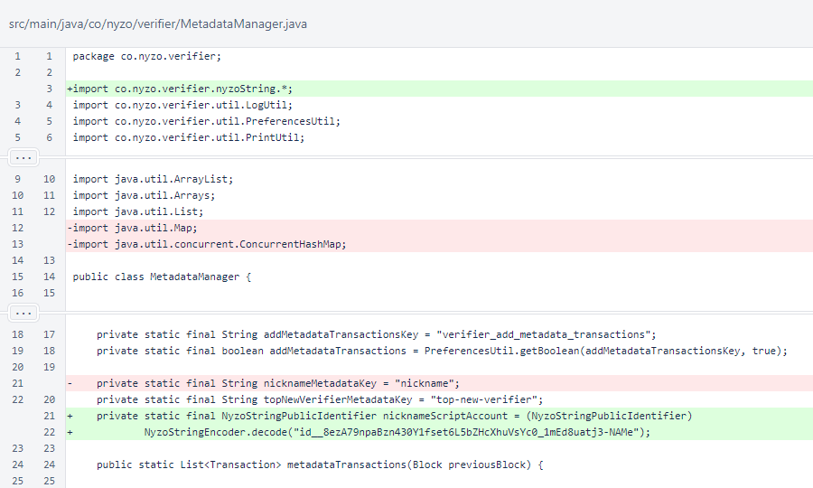
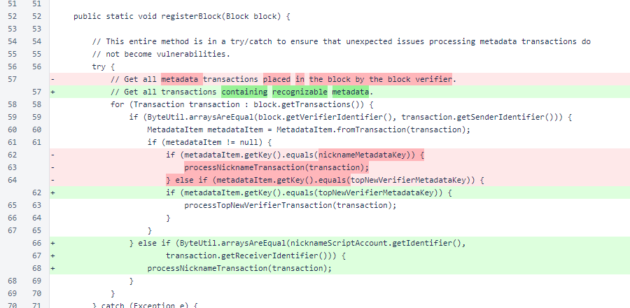
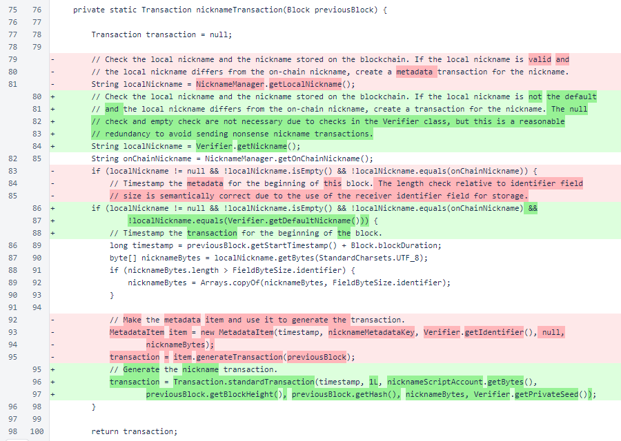
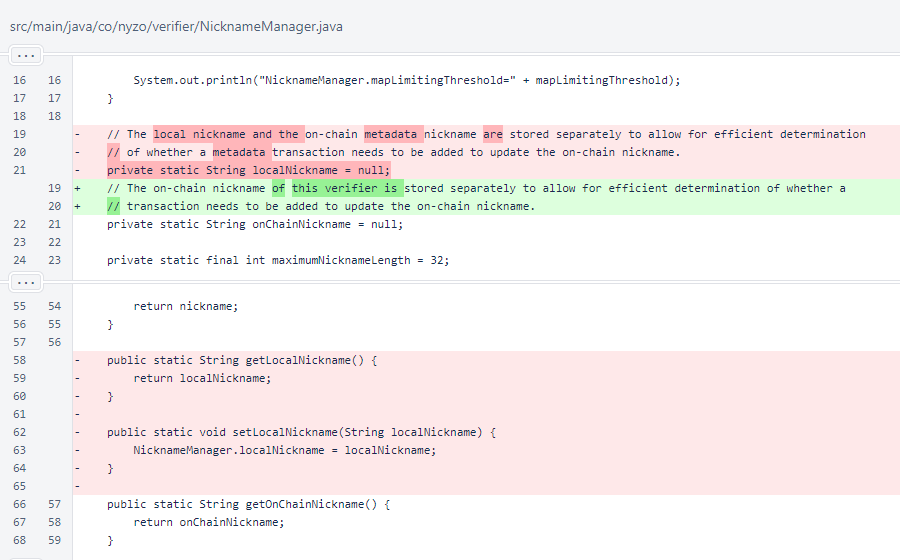
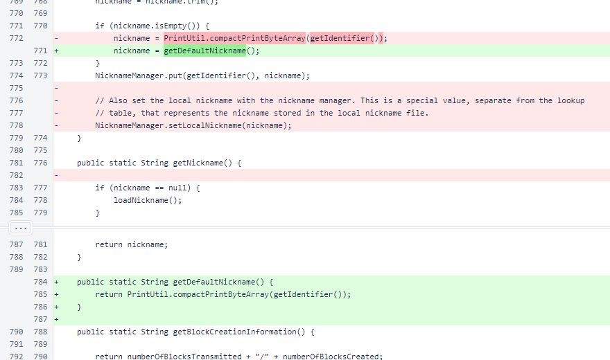

Nyzo 639: nickname transactions
Nyzo version 639
(commit on GitHub) modifies the nickname metadata transactions to work with the
NicknameScript.
This version affects the verifier, client, and sentinel.
The NicknameScript was added to version 638. This script
produces a nickname index from the transactions sent to
id__8ezA79npaBzn430Y1fset6L5bZHcXhuVsYc0_1mEd8uatj3-NAMe.
Version 567 added on-chain metadata through small transactions sent automatically by verifiers.
This version modifies the nickname metadata functionality of version 567 to be compatible with the script of version
638.
In MetadataManager, the nicknameMetadataKey
that was used for the previous metadata transaction format was replaced with the identifier of the account where the
NicknameScript is registered.

In MetadataManager.registerBlock(), logic recognizing the old nickname
transaction format was replaced with logic recognizing the new nickname transaction format.

The MetadataManager.nicknameTransaction() method now produces the
nickname transaction in the new format.

The MetadataManager.processNicknameTransaction() method now uses
the new format, retrieving the nickname from the transaction's sender data.

The localNickname field and its supporting methods were removed from
NicknameManager. This field was redundant with the nickname provided by the
Verifier.getNickname() method.

In the Verifier class, some inconsequential cleanup of the code was done.

Later in the Verifier class, more inconsequential cleanup was done, a call to
NicknameManager.setLocalNickname() was removed because that method
was removed, and the getDefaultNickname() method was added to assist in
detection of whether a user actually set a nickname or if the nickname based on the raw verifier identifier is in
use.
